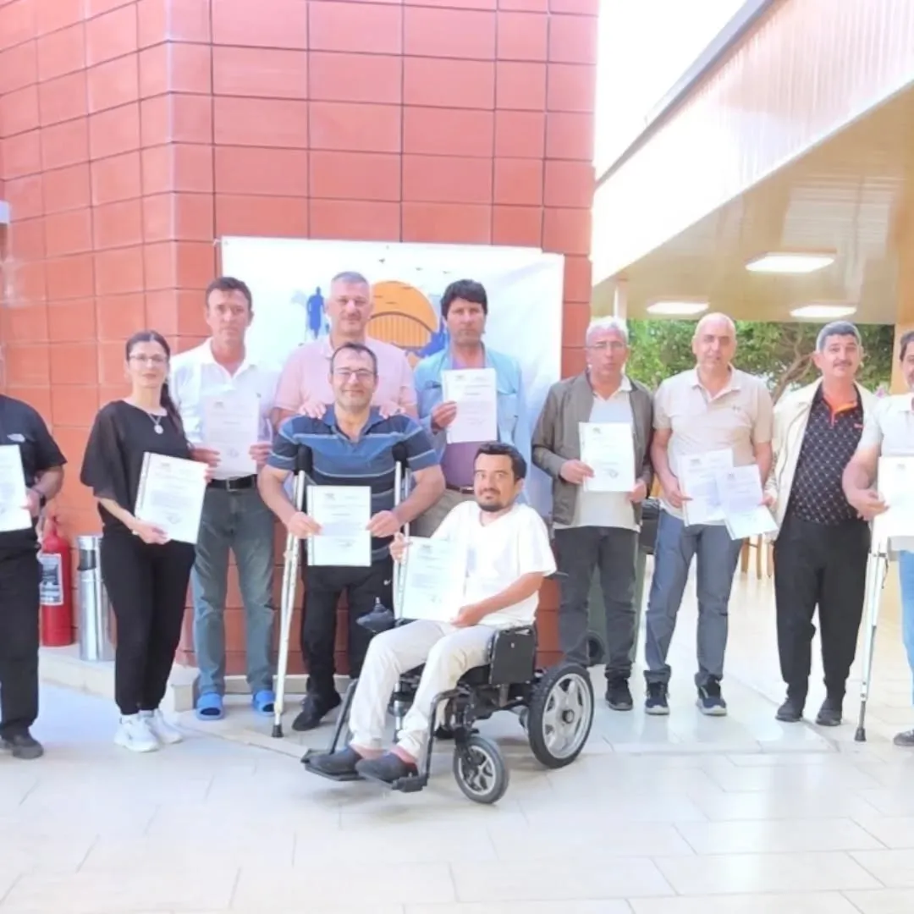

Projelerimiz ve etkinliklerimizle engelleri kaldırmaya yönelik çalışmalarımızdan en son gelişmeler.

Engelli Memur & İşçi Derneği tarafından EÜAŞ Mersin Taşucu Denizkent Eğitim Tesislerinde gerçekleştirilen Eğitim ve Değerlendirme Kampımızın son gününde anlamlı bir program düzenlendi.
Kamp süresince gerçekleştirilen eğitim, istişare ve sosyal etkinliklere katılım sağlayan değerli üyelerimize, derneğimizin faaliyetlerine sundukları katkılar ve göstermiş oldukları özverili çalışmalar dolayısıyla teşekkür belgeleri takdim edildi.
Teşekkür belgesi töreninde konuşan Genel Başkanımız Erhan ÖZCAN ve dernek yöneticilerimiz, Gönül Köprüsü ailesinin her geçen gün daha da büyüdüğünü, birlik ve dayanışma ruhunun güçlenerek devam ettiğini ifade ederek üyelerimize katkılarından dolayı teşekkür ettiler.
Bir hafta boyunca eğitim, değerlendirme, sosyal etkinlikler ve dayanışma faaliyetleriyle dolu dolu geçen kampımız, üyelerimiz arasında güçlü dostluklerin pekişmesine ve yeni projelerin değerlendirilmesine önemli katkılar sağladı.
Engelli Memur & İşçi Derneği olarak kampımıza katılan tüm üyelerimize teşekkür ediyor, birlik ve dayanışma içerisinde engelleri aşmaya devam edeceğimize inanıyoruz.
"Gönül Köprüsü ailesi her geçen gün daha da büyüyor. Birlik ve dayanışma ruhumuz engelleri aşmadaki en büyük gücümüzdür."
Resmi Instagram hesabımızdaki paylaşımı inceleyin.